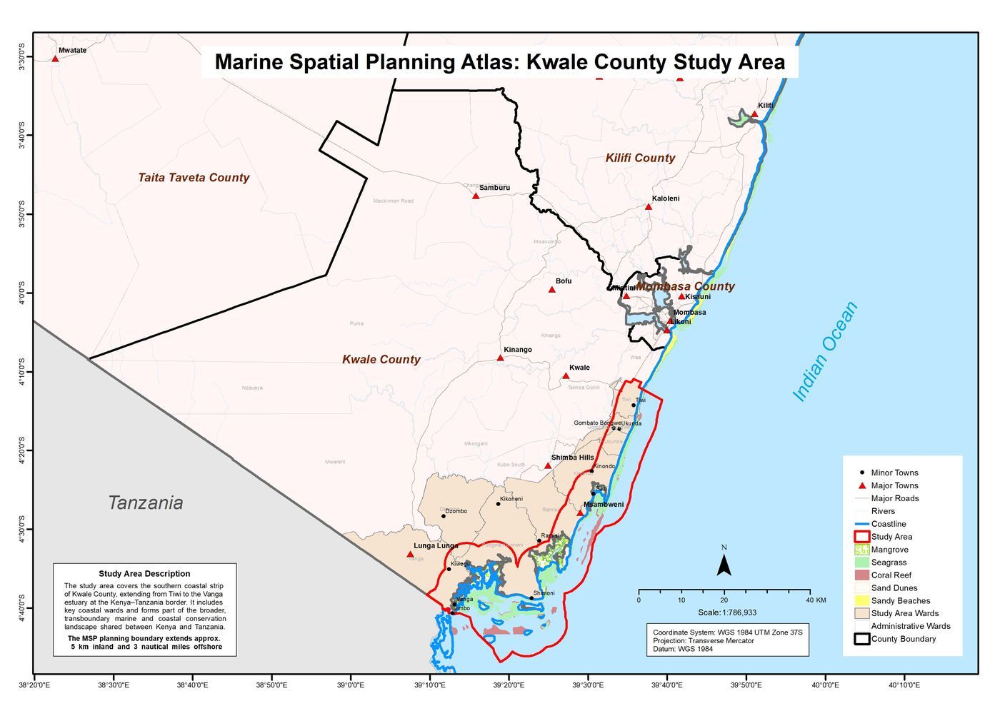
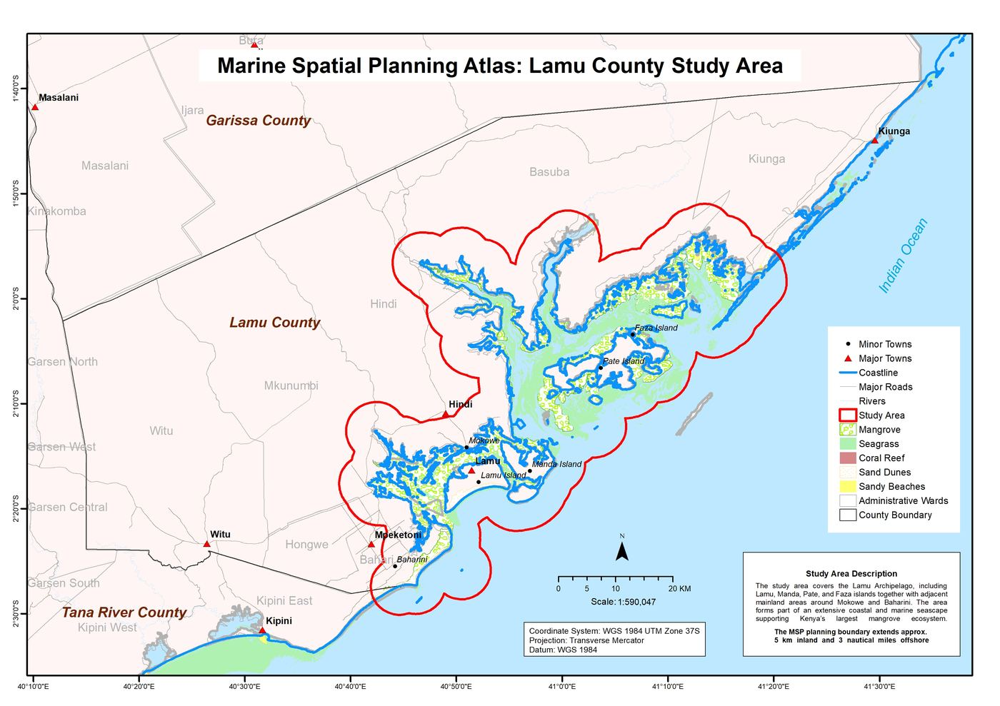
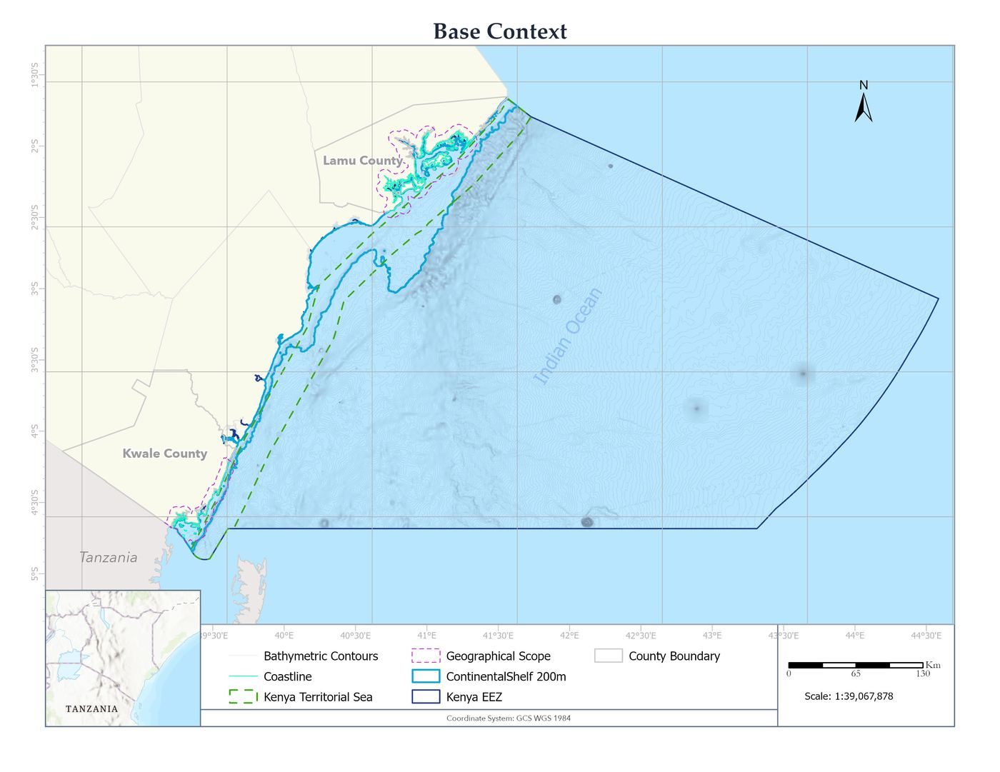
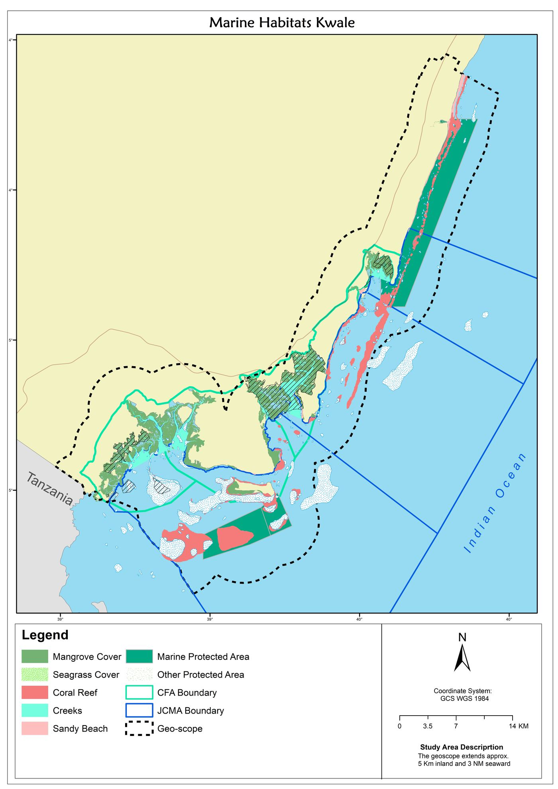
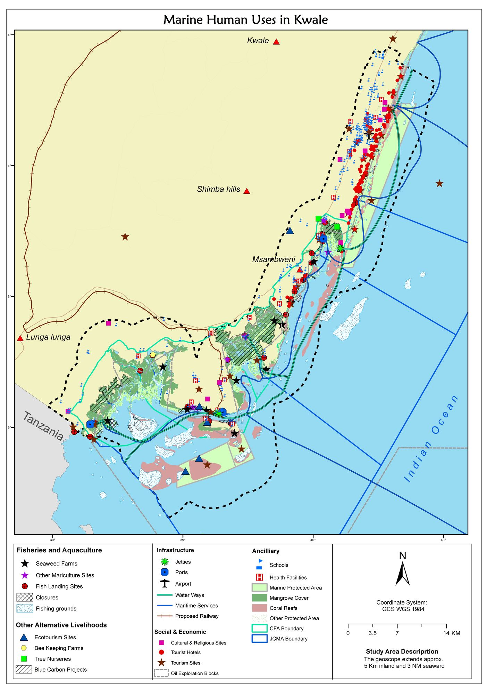

Marine Spatial Planning Atlas for Kwale & Lamu Counties
Client: Nairobi Convention Secretariat / UNEP · GIS & Remote Sensing Specialist
PLATE 01 · 2026
Built the geospatial backbone for Kenya's marine spatial plan across two coastal counties, pulling 17 thematic data layers (bathymetry, coral reefs, mangroves, seagrass, fisheries, marine protected areas, human uses) into a structured PostGIS database, then producing the thematic maps that planners and government officials actually use to make zoning decisions.
- Digitised spatial features from planning documents, technical reports, and participatory mapping sessions with coastal communities.
- Designed a production PostGIS schema (8 schemas, 33 spatial tables, spatial indexes and audit triggers) with a Python ingestion pipeline that auto-discovers and reprojects incoming datasets.
- Ran the spatial analysis behind the plan: conflict detection between human uses and marine habitats, conservation-gap analysis, and coverage against Kenya's 30×30 biodiversity targets.
- Authored ISO 19115/19139-compliant metadata for every dataset so the atlas integrates into the national MSP data catalogue.





17thematic data layers
33spatial database tables
2counties mapped
3CRS transforms in the pipeline
Role: GIS & Remote Sensing Specialist
Stack: PostGIS · GeoPandas · ArcGIS Online REST · QGIS · Leaflet